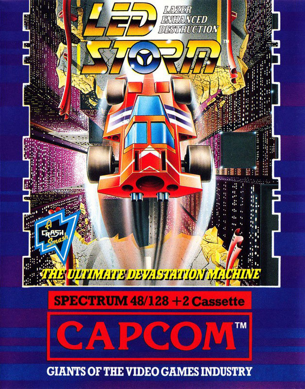
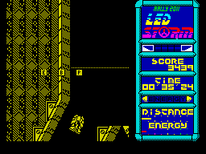
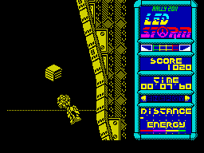

LED Storm


{kind=link}

| Publisher: | GO!/Capcom |
| Price: | £8.99 Cass, 12.99 Disk |
| Year: | 1988 |
| Source: | CRASH, Issue 61 |

Spring showers bring heavy weather (eh? these comments are getting as bad as THE GAMES MACHINE’s — Ed)
In a future time, traffic congestion has got so bad that special ‘skyways’ have been built. But although they’re free from stupid pedestrians, there’s more than enough kamikaze drivers (no bears, though) (thank goodness! — Ed) to make life interesting.
Nine vertically-scrolling tracks range from the high flyovers of the Capital City to the uninviting landscape of Ruins Desert. Contact with small cars and other obstacle slows you down and reduces your energy level. Some of the tracks also contain huge gaps which can only be cleared by hitting a ramp at full speed.

battering ram and ‘P’ is for points —
but you won’t get them in mid-air
Although your turbo-charged car is completely unarmed, it does have one useful trick up its sleeve: it can perform huge upward leaps to avoid other cars, and can even crush them as it lands. But beware the pesky frogs which hang on the back of the car, stopping it from jumping: they must be shaken off by quickly moving left and right.
Each of the nine stages must be completed before your energy level reaches zero. Fortunately, extra energy can be gained by driving through fuel cans and energy tablets. The latter are either static, floating around the track or flying (in which case the car must jump to get them). Small bonus letters may also be collected for extra points and even a battering ram to allow you to destroy other cars on contact.
Falling into gaps or fatal car smashes do not, strangely, mean the end of the game. Instead a new car is brought onto the track by a large, hovering spaceship at the cost of much vital energy.
What really makes LED Storm so superior to other driving games is its exhilarating speed: it must be one of the fastest games on the Spectrum. The super-fast, and smooth, vertical scrolling is stunning, and the effect of speed is cleverly enhanced by the horizontal marks on the track. Furthermore, the various vehicles are all well-drawn, especially the extra-large juggernauts. One minor flaw is the horizontal movement of the screen which is stepped instead of smoothly scrolling, but it doesn’t affect play anyway.

about to crash
Sound is also used well: brilliant 128K tunes accompany both the title screen and high scores table, while the furious driving action features a variety of excellent effects. 48K owners aren’t too badly off either, although there is a multiload with two levels being loaded at a time.
As a fan of that golden oldie, Spy Hunter, when I first set eyes on LED Storm my eyes popped out. And playing it proves an even more amazing experience — genuine skill is required to make progress, rather than the repetitive blasting featured in other recent driving games. Excellent game design and superb presentation go together to produce one of the most playable games for a long time.
Even so, I wondered if the simple idea of jumping and zooming along the highway would eventually get boring, but the opposite is true: the more I played, the harder it was to tear myself away from such a compulsive game. If the soon-to-be-released coin-op is anywhere near as enjoyable, it’s sure to be the arcade hit of 1989. And just remember, you saw it first on the Spectrum!
PHIL ... 95%
WEATHERING THE STORM
- In Netwood City, keep to the clear parts of the track to go faster.
- Collect the letter ‘B’, then ram all the other cars.
- Hit the ramps before gaps at full speed, or you’ll fall short of the other side.
- In Coral Sea, if your car is flashing, you can destroy the coral monsters on contact.
- If you get stuck behind some rocks in Netwood City, just jump to get over them.
- Keep a look out for fuel cans: if six are collected, your energy returns to its maximum level.
GO!/Capcom have done an excellent job with a detailed landscape and sprites that, although monochrome, are very effective. You’ll need good reflexes to be able to survive even the first level, which makes it extremely addictive. The soundtrack that accompanies the split-second action is excellent with a host of arcade-type effects and a selection of tunes that grip your attention and add atmosphere to the game. The basic idea behind LED Storm is very similar to the classic Spy Hunter, but instead of using weapons you can jump over your enemies and shake off passengers. I’m sure that LED Storm will be a hit with everyone, and it certainly deserves to be.
NICK ... 91%
From the programming team who brought you Bionic Commando comes a nine level, rip-roaring, nail-biting racing game. Initially you may, like me, puzzle at the lack of offensive weapons to blast all the unfriendly road hogs. But once you get into the game the sheer thrill of racing down the track, at a vast rate of knots, pushes all thoughts of blowing up motorway monsters from your mind. Besides, who needs poncey machine guns and rocket launchers when you can leap and flatten the dudes. If you think you can stand the pace buy LED Storm now!
MARK ... 92%
THE ESSENTIALS
| Joysticks: | Cursor, Kempston, Sinclair |
| Graphics: | Very fast vertical scrolling of the monochromatic track |
| Sound: | Excellent 128K tunes and neat in-game effects, including a nice metallic ‘thump’ sound when the car lands |
| Options: | Definable keys |
| General rating: | A beautifully-presented driving game that plays as good as it looks |
| Presentation: | 92% |
| Graphics: | 90% |
| Sound: | 91% |
| Playability: | 93% |
| Addictive qualities: | 92% |
| Overall: | 93% |